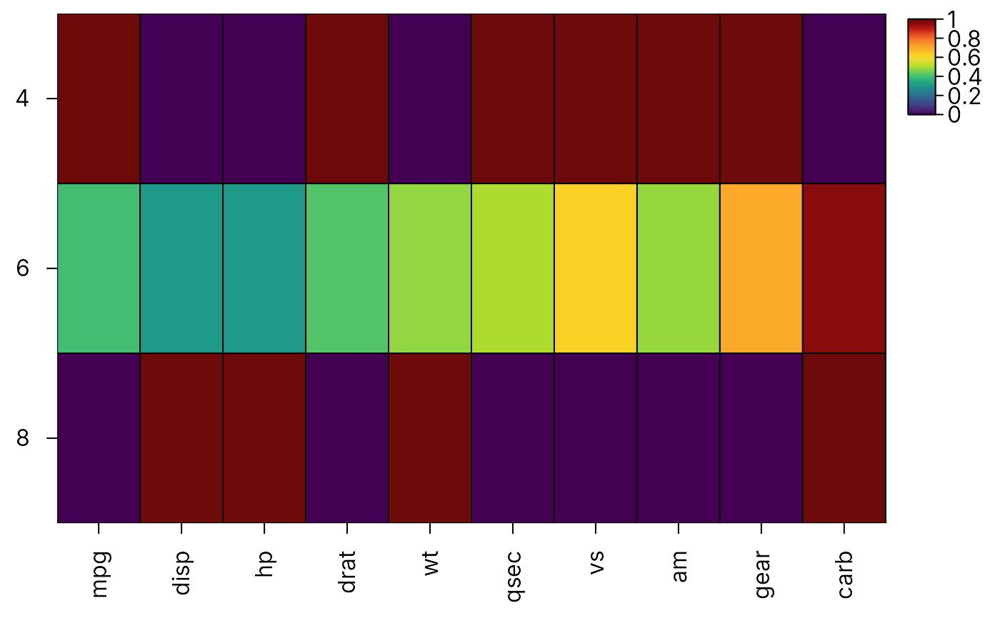
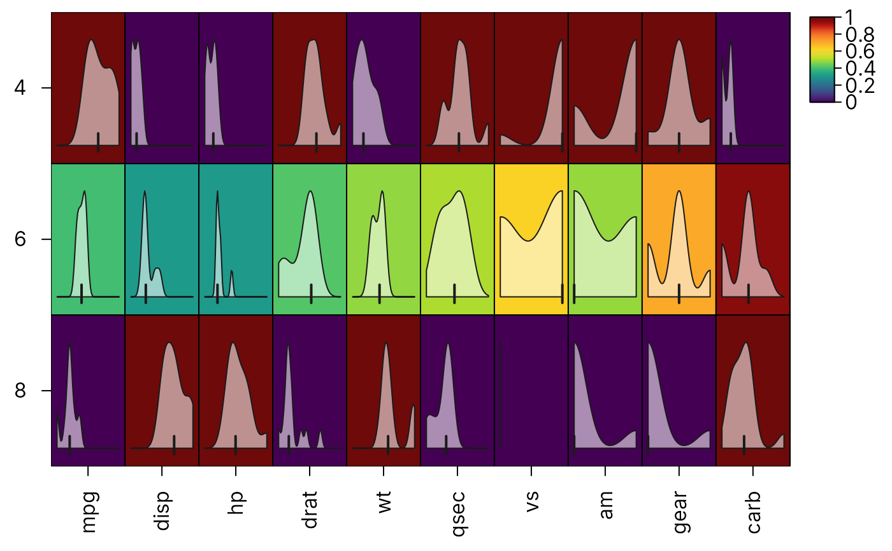
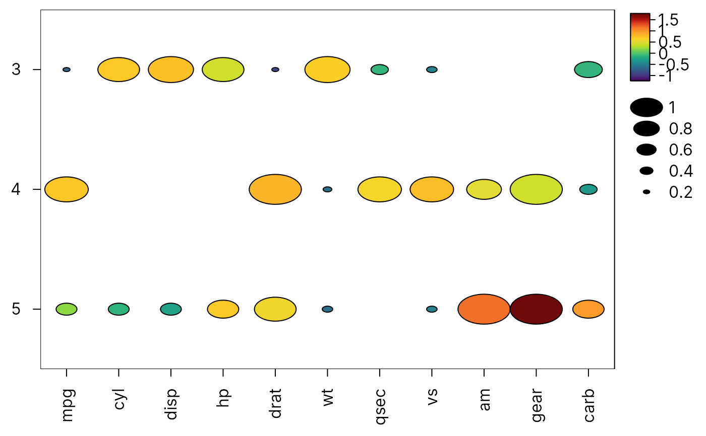

Summarise groups of rows or columns for a heatmap
Source:R/heat_map_summarise.R
heat_map_summarise.Rdheat_map_summarise() reduces the columns (and/or rows) of a matrix
or data.frame to one per group, for heatmaps of group summaries such as the
mean expression of each gene in each cell type (a pseudobulk view of
single-cell data) or the median intensity of each marker in each cluster
of cytometry events. Summaries computed with different functions can be
combined in heat_map(), e.g. the mean as the colour and the
proportion of cells expressing each gene (fun = "detected") as the
cell size of a dot plot.
Arguments
- x
a matrix or data.frame. Only numeric columns are summarised; other columns are dropped with a message.
- group_x
a vector assigning each column of
xto a group, in the order of the columns ofx(or named by column name). Each group becomes one column of the result. Columns in a missing group are dropped.- group_y
a vector assigning each row of
xto a group, in the order of the rows ofx(or named by row name). Each group becomes one row of the result. Rows in a missing group are dropped.- fun
the summary of the values in each group, one of
"mean"(default),"median","sum","min","max","sd","n"(the number of non-missing values) or"detected"(the proportion of non-missing values abovethreshold), or a function taking a numeric vector and returning a single number. Missing values are removed before summarising."values"keeps the values themselves: the result is then a matrix of lists holding the numeric vector of values in each group, forcell_valuesinheat_map()to draw their distributions inside the cells.- threshold
values above
thresholdare counted byfun = "detected", set to 0 by default.
Value
a numeric matrix with one column per group of group_x (or
the columns of x) and one row per group of group_y (or the
rows of x), or a matrix of lists for fun = "values". Groups are in the order of their factor levels (sorted
for other vectors). Groups without any values are NA.
Examples
# Mean of each variable for each number of cylinders
cyl <- heat_map_summarise(mtcars[, -2], group_y = mtcars$cyl)
heat_map(cyl, scale = "column", popup = FALSE)
#> Applying range scaling to each column...

# Distribution of each variable for each number of cylinders in its cell
heat_map(
cyl,
scale = "column",
cell_values = heat_map_summarise(mtcars[, -2], group_y = mtcars$cyl,
fun = "values"),
popup = FALSE
)
#> Applying range scaling to each column...

# Dot plot - mean as colour, proportion above the overall mean as size
z <- scale(mtcars)
heat_map(
heat_map_summarise(z, group_y = mtcars$gear),
cell_size = heat_map_summarise(z, group_y = mtcars$gear, fun = "detected"),
cell_shape = "circle",
popup = FALSE
)
